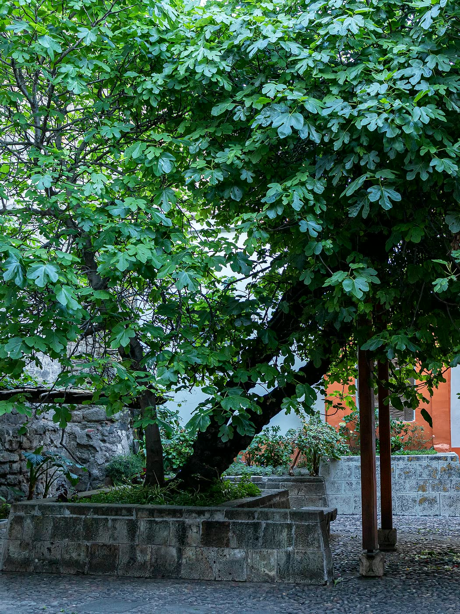
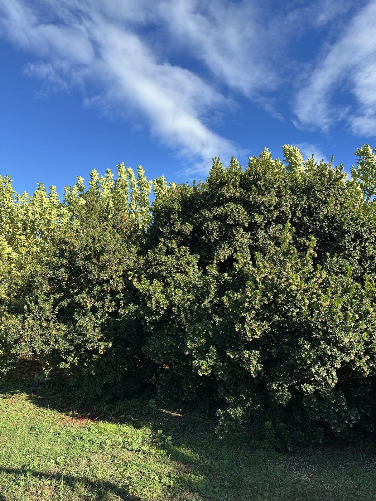
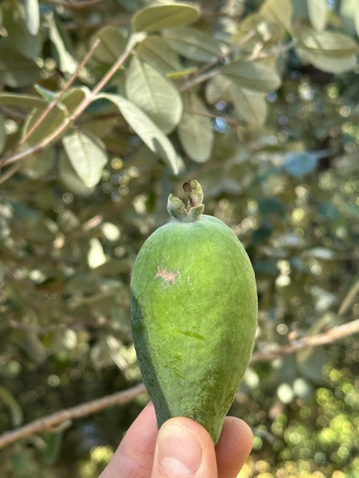
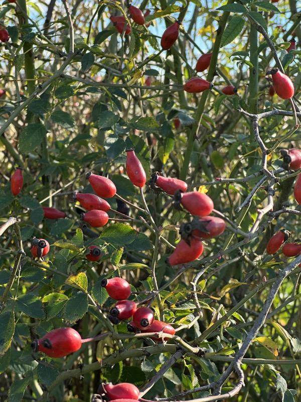
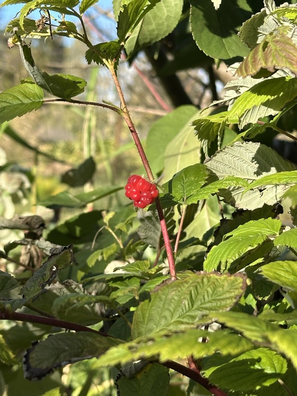
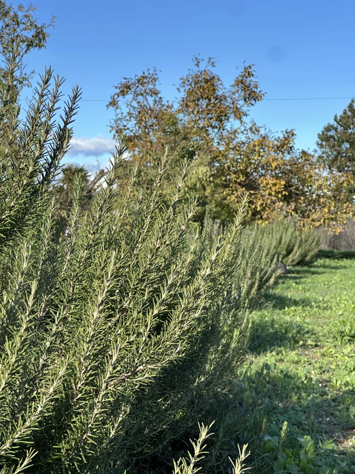
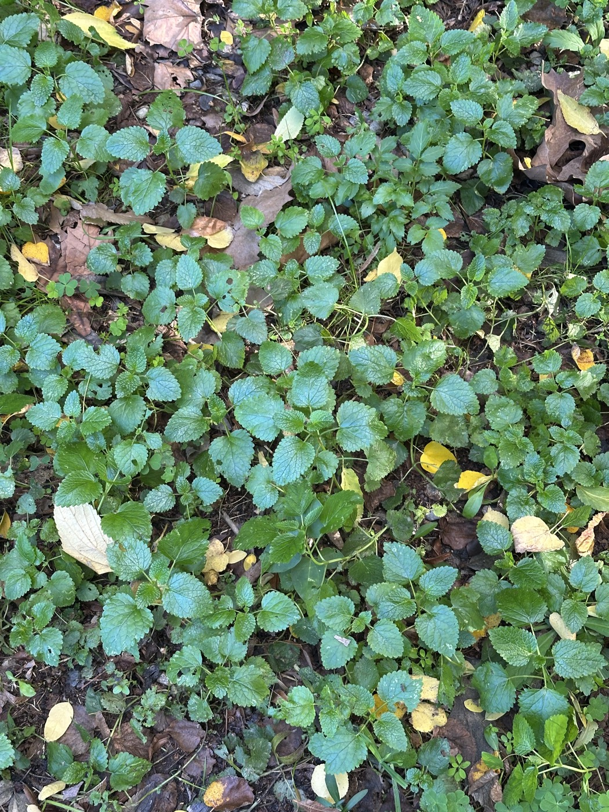
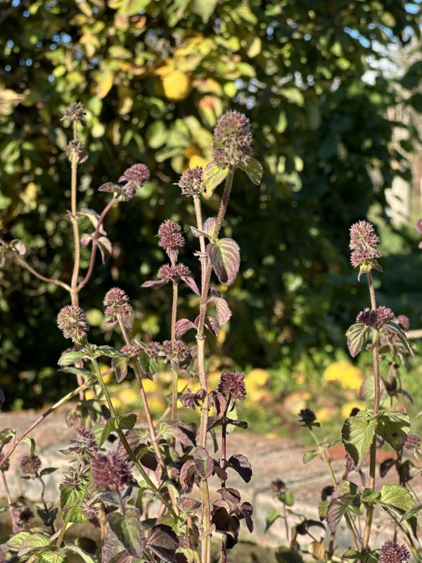
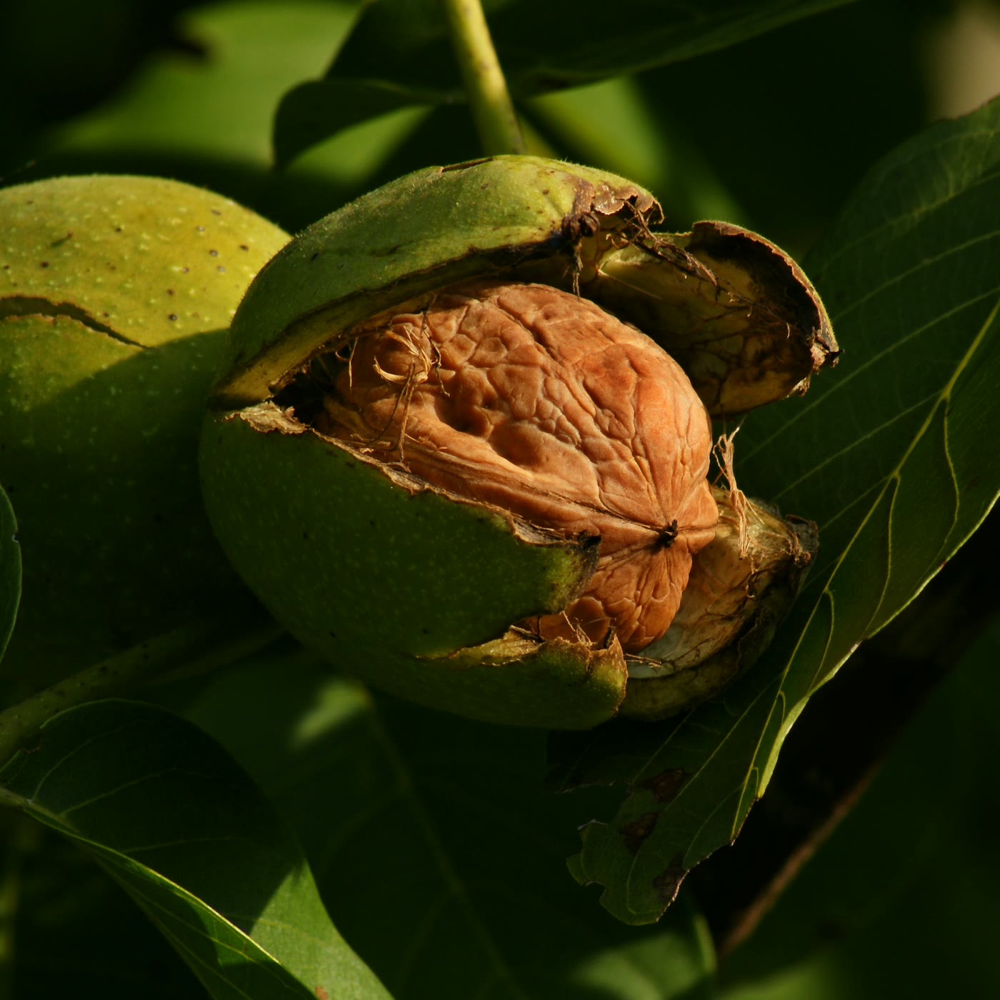

オリーブ
Olea europaea
地中海の木。裏が銀色の葉、ゆっくりと育つねじれた幹、そして秋に緑から黒へと熟す小さな実。


散歩したり、腰を下ろしたり、あたりを眺めたりできる静かな庭。ハーブ、果樹、水、そしてしばらく立ち止まれる片隅。
Olea europaea
地中海の木。裏が銀色の葉、ゆっくりと育つねじれた幹、そして秋に緑から黒へと熟す小さな実。
Ginkgo biloba
地球上で最も古い樹木の一つ。扇形の葉は秋に澄んだバター色の黄色に変わり、ほとんど一斉に落ちます。


Ficus carica
手のひらのように開く滑らかな灰色の幹が何本もあり、枝はパーゴラの上に広がっています。その下の木陰は涼しく、夏の終わりには大きな葉の間で紫色の実が熟します。


Crataegus monogyna
生け垣に使われるとげのある木。春には白い花を咲かせ、秋には鳥がついばみに来る小さな赤い実をつけます。


Cydonia oblonga
強い香りをもつ、金色で産毛に覆われた実。生では硬すぎて食べられませんが、じっくり煮るとマルメロのペーストになります。


Punica granatum
秋になると葉は黄色くなり、実は枝についたまま割れて、中の赤い粒を見せます。


Diospyros kaki
葉が落ちた後も裸の枝に残る鮮やかなオレンジ色の実。冬まで灯るランタンのようです。


Arbutus unedo
花と熟した実が同時に：小さな白い鈴のような花の隣に、ざらざらした皮の丸い赤い実。


Acca sellowiana
灰緑色の葉と赤と白の花をつける常緑低木。緑の実はパイナップルとグアバの中間のような味がします。


Rosa canina
生け垣や小道に咲く野生のバラ。淡いピンクの一重の花のあと、冬まで残る赤いローズヒップがなります。


Lycium barbarum
小さな紫の花と鮮やかな赤い実をつける、枝垂れるようにゆるく広がる低木。


Rubus idaeus
庭の縁に沿って実をつける茎。熟すと実は軸から簡単に外れます。


イチジクの木全体の写真（Wikimedia Commons）： Guillermo Carlos Gómez (CC BY-SA 4.0), トリミング
Salvia rosmarinus
触れると地中海の丘の香りがする針のような葉と、ミツバチが大好きな小さな青い花。


Melissa officinalis
澄んだレモンの香りがする、柔らかく縮れた葉。心を落ち着かせるハーブティーの定番です。


Mentha aquatica
湿った土地を好むミント。丸い薄紫の花穂と、強くさわやかな香り。


Ruta graveolens
青灰色の丸みのある葉に、鋭く苦い匂い。伝統的な庭のハーブで、触るより眺めるのがおすすめです。


Achillea millefolium
羽のような葉と、小さな白い花が平らに集まった花序。長く咲き続ける丈夫なハーブです。


Oxalis
クローバーのようなハート形の小葉が3枚。夕方になると閉じます。葉はほどよい酸味があります。


Oxalis triangularis
光の中で開き、夜には閉じる、濃い紫色の三角形の葉。


Sechium edule
ウリ科のつる植物。淡い緑色でしわのある実が、秋に巻きひげから垂れ下がります。


アーモンド、クルミ、ヘーゼルナッツの入ったボウルと、それぞれが実る木。




樹木の写真（Wikimedia Commons）： Jebulon (パブリックドメイン) · Böhringer Friedrich (CC BY-SA 2.5) · Dominicus Johannes Bergsma (CC BY-SA 4.0), トリミング
Mespilus germanica
大きな葉をもつ小さく曲がった木。先端が冠のように開いた茶色の実は、初霜の後にやわらかくなってから食べます。そのころにはアップルバターのような味がします。


樹木の写真（Wikimedia Commons）： Karelj (パブリックドメイン), トリミング